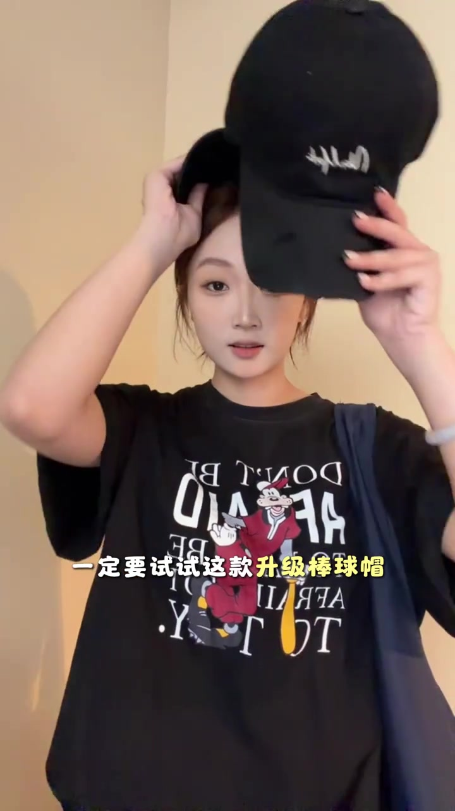
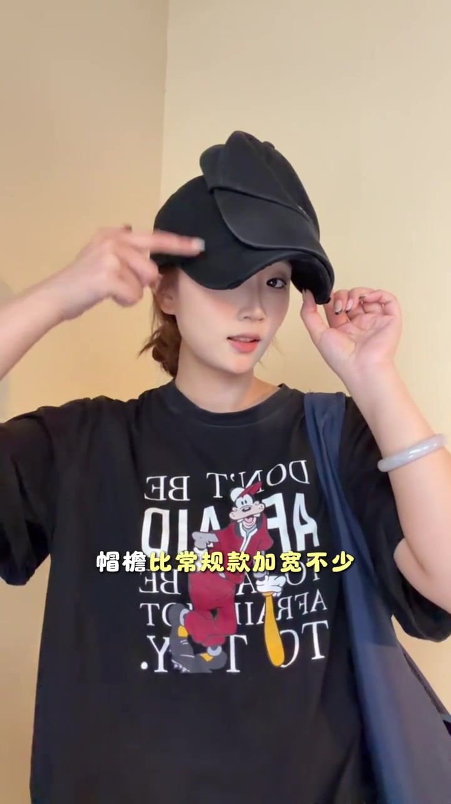
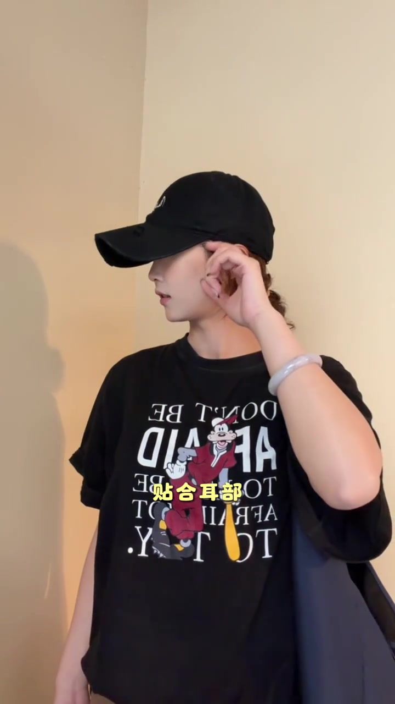

先把问题抛给明星的棒球帽造型
短片用一段戴棒球帽的明星画面开场。旁白没有先谈品牌，而是问：为什么有些明星即使帽檐遮住一部分脸，第一眼仍然显得好看？这个提问把关注点落在帽子与脸部轮廓的关系上。
“为什么好多明星戴棒球帽，就算不露全脸，一眼就觉得是美女。” [00:00–00:04]

镜头切回普通帽型：正面与侧面都要看
接着，出镜者戴上一顶常规棒球帽作示范。视频字幕把问题概括为“显头大、显脸大”，侧面则强调颧骨和咬肌区域更容易露出来。这里是短片作者对视觉效果的判断，并非对所有脸型都成立的测量结论。
画面字幕可辨认为“精致建模脸”“反倒踩雷”“颧骨和咬肌”；页面末尾仍按要求原样保留 Whisper 的“见魔脸”“泛到彩雷”“全股药机”等识别结果。
“升级款”出现，演示从比较开始
在说完常规款的问题后，出镜者把两顶深色帽子同时举到镜头前，再换上她所推荐的“升级棒球帽”。叙事在这里从问题转向解决方案，旁白称上脸后的氛围感更强。

加宽帽檐、加深帽身，再看耳部贴合
第一处差异是帽檐。画面把帽檐叠放比较，字幕明确写着“帽檐比常规款加宽不少”；短片作者认为，更宽的遮挡范围可以弱化颧骨与咬肌区域的存在感。

随后镜头转到侧面，旁白继续提到更深的帽身和耳部贴合。出镜者用手指向耳侧，让观众观察帽边与耳朵附近的关系，并将其与侧脸线条联系起来。

以完整造型收尾，把效果归纳为“头包脸”
最后，镜头回到正面完整试戴。旁白把推荐浓缩成一句：即使不是天生上镜脸，也可以通过这类帽型得到她所说的“明星同款头包脸效果”。短片到此结束，没有提供尺寸数据，也没有展示不同头围或脸型的交叉试戴。